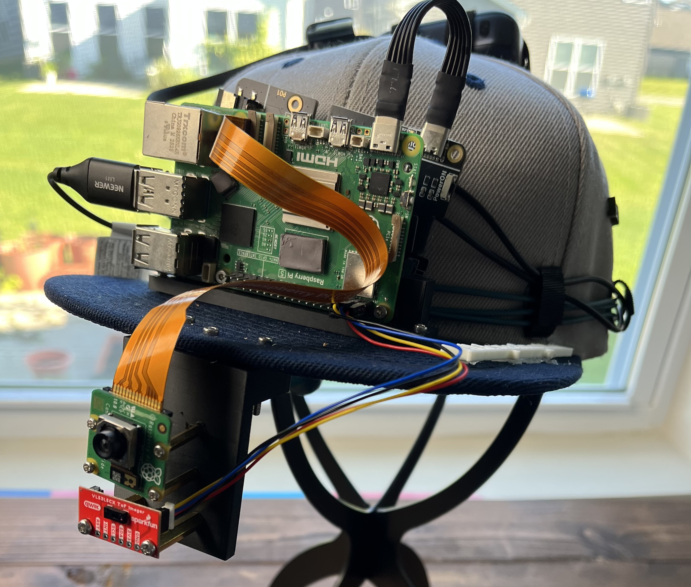

Known-person recognition
HOG face detection locates a face, then the local face_recognition pipeline compares its encoding with the cached entries in known_faces_cache.pkl. A matched name can replace the generic word “person” in an alert.
ENGINEERING • AI • ASSISTIVE TECHNOLOGY
A Raspberry Pi 5 wearable assistive computing system that detects nearby obstructions and speaks alerts to the wearer, while its perception, decisions, speech, and device controls run locally without Wi-Fi or cloud services.

OVERVIEW
Whispering Hat is a wearable assistive AI system I built to help blind and visually impaired users understand what is happening around them.
The system combines a Raspberry Pi Camera Module 3 Wide, YOLO11n object detection, ByteTrack tracking, VL53L5CX 8x8 Time-of-Flight depth sensing, camera and depth fusion, walking-path analysis, motion and approach estimation, risk classification, known-person recognition, FER2013 TensorFlow Lite facial-expression estimation, prioritized spoken warnings about nearby obstructions, and local microphone voice commands.
Multiple sensors and models run at different rates, maintain their own memory, and contribute information to a central decision system that decides what is important enough to tell the wearer. The complete perception, decision, speech, and control pipeline runs on the Raspberry Pi itself.
THE CHALLENGE
A normal object detector can identify dozens of things in a camera frame, but announcing every detection would overwhelm a blind user. Whispering Hat therefore evaluates context before deciding whether a spoken alert is useful.
PROCESSING PIPELINE
CORE ARCHITECTURE
All awareness and decision-making runs inside the Raspberry Pi 5 local processing boundary. Camera capture, depth sensing, inference, risk logic, speech, and voice control are coordinated as separate workloads rather than one blocking loop.
OBJECT AWARENESS
Whispering Hat does not simply speak the name of every object YOLO detects. Its rules classify situations as SAFE / PASSIVE, NOTICE, CAUTION, or STOP, then modify those risks using the walking corridor and the object's category.
The risk score is built from engineered rules and sensor information, not copied from YOLO confidence. A trapezoidal walking corridor makes objects in the path more important than objects at the side, while camera/depth fusion adds real distance and time-to-collision signals. Short tracking and alert histories smooth approach signals and prevent the same warning from being repeated on every frame.
HUMAN AWARENESS
HOG face detection locates a face, then the local face_recognition pipeline compares its encoding with the cached entries in known_faces_cache.pkl. A matched name can replace the generic word “person” in an alert.
The bundled FER2013-style TensorFlow Lite model estimates angry, disgust, fear, happy, sad, surprise, or neutral from a cropped face. Readings are smoothed; this is visible-expression estimation, not knowledge of a person's internal emotion.
COMPLETELY OFFLINE
Whispering Hat is designed so its core awareness system does not depend on Wi-Fi or cloud services.
YOLO11n, ByteTrack, VL53L5CX processing, risk logic, HOG face detection, cached face matching, FER2013 TFLite inference, Vosk recognition, and eSpeak speech output operate locally on the Raspberry Pi. Once the models and software are installed, no cloud inference is required.
No Wi-Fi required for core operation.
Vosk accepts only “detection on” and “detection off.” Turning detection off pauses awareness processing while the camera continues running, making voice control deliberately simple rather than a general assistant.
TECHNICAL STACK
Raspberry Pi 5
Raspberry Pi OS Trixie / Linux
Camera Module 3 Wide with Picamera2 + libcamera
YOLO11n + ByteTrack
VL53L5CX 8x8 Time-of-Flight with SparkFun Qwiic / I2C
HOG face detection, face_recognition encodings, and local pickle cache
FER2013 TFLite / LiteRT-compatible inference
Vosk + SpeechRecognition + PyAudio; eSpeak and PipeWire / pw-play
Python, OpenCV, NumPy, and CSV event logging
ENGINEERING FOCUS
The difficult part was not running one AI model. It was getting everything to work together quickly enough to be useful. The camera may produce frames faster than YOLO can process them, while the depth sensor produces a separate 8x8 coordinate system that must be aligned with the camera view.
Background workers, latest-frame capture, scheduled inference, tracking and depth memory, face memory, expression smoothing, alert memory, priority queues, cooldowns, and risk escalation keep one slow operation from freezing the wearable system. Face recognition, emotion inference, voice recognition, and speech therefore run on their own schedules or workers.
REFLECTION
The hardest part of Whispering Hat was not getting YOLO, a distance sensor, or a face model to work individually. It was deciding how all of them should work together.